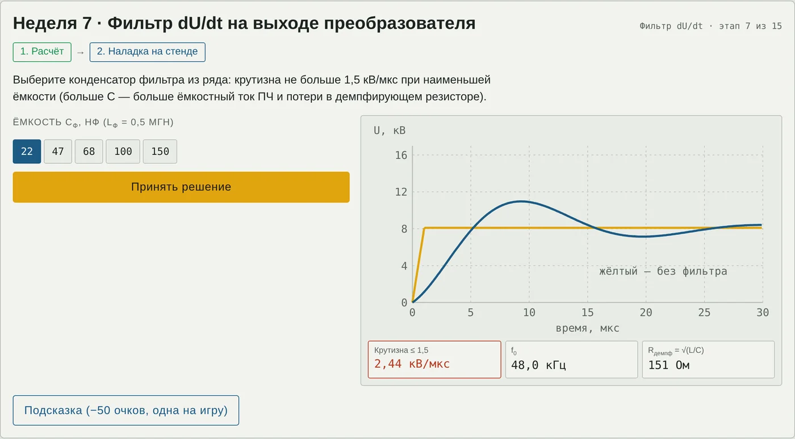

Техника высоких напряжений
Методические указания для студентов
Наладка ЧРП шахтного подъёма 6 кВ
Расчётная работа, вариант 1, недели 1–15, и игра-тренажёр
Цель. Выполнить расчёты 15 недель задания «Частотно-регулируемый электропривод шахтной подъёмной установки (6 кВ)» и на их основе принять инженерные решения: выбрать фильтр, толщину изоляции, противокоронное покрытие, меры против подшипниковых токов, нормы и методы диагностики. Что понадобится: лекции 1–3, калькулятор (корни, логарифмы, степени), браузер. Ссылку на игру выдаёт преподаватель; игра работает и как файл, открытый в браузере. |
1. Объект и исходные данные
Скиповая подъёмная установка глубокой шахты: асинхронный двигатель 2500 кВт, 6 кВ питается от многоуровневого транзисторного ПЧ с ШИМ по кабелю со сшитым полиэтиленом длиной 350 м. Мнемосхема и обозначения — в лекции 1; в игре аппараты загораются по мере наладки.

Рис. 1. Мнемосхема ЧРП скиповой подъёмной установки 6 кВ
Исходные данные: Uном = 6 кВ; Pном = 2500 кВт; Lкаб = 350 м; dU/dt = 8 кВ/мкс; εr СПЭ = 2,3; Zкаб = 45 Ом; Zдв = 800 Ом; dСПЭ = 3,4 мм; Eпр = 250 кВ/см; испытание обмотки 15 кВ. Недостающие величины приняты типовыми — они приведены в тексте этапов и в таблице допущений лекции 1.
2. Правила игры
15 этапов — по одному на неделю. Каждый этап: сначала расчёт (ввести число), затем наладка на стенде (ползунки, переключатели, выбор решения) и кнопка «Принять решение». Всего 30 проверок.
Числовой ответ принимается с допуском ±3 %; дробную часть можно отделять запятой или точкой.
«Жизни» — 6 витков первой катушки статора. Каждая ошибка: отражённая волна прожигает изоляцию одного витка. Шестой прожжённый виток — межвитковое замыкание, игра начинается заново. Три верных ответа подряд с первой попытки — пропитка VPI восстанавливает один виток.
Очки: верно с первой попытки — 100, после ошибки — 50; подсказка (одна на всю игру) снимает 50. Максимум 3000.
Задачи даны текстом, без готовых формул: формулу нужно вспомнить по лекциям и учебнику. Знак ? в условии — бесплатная наводящая подсказка (о чём вспомнить, значение константы, откуда взялось число из прошлой недели). Наведите на него курсор, на телефоне — нажмите. Платная подсказка (−50 очков) показывает формулу.
Зелёные показания стенда — условие выполнено, красные — нет. Обычно нужно наименьшее или наибольшее подходящее значение — читайте задание до конца.
После 15-го этапа нажмите «Пуск подъёма» — скип поднимется по стволу. Затем «Скопировать итог» и отправьте текст преподавателю.

Рис. 2. Пример стенда: неделя 7, выбор конденсатора фильтра dU/dt
3. Задания по неделям
Кабельная линия
Неделя 1 · Скорость волны и время пробега
Пояснение. При крутых фронтах кабель — длинная линия: импульс идёт волной со скоростью v. Коэффициент укорочения VOP = v/c вводят в рефлектометр.
Расчёт. Импульсы преобразователя идут к двигателю по кабелю с изоляцией из сшитого полиэтилена длиной 350 м. Относительная диэлектрическая проницаемость изоляции εr = 2,3. За сколько микросекунд волна пройдёт от преобразователя до зажимов двигателя?
Наладка. Рефлектометр (импульсный локатор) показывает эхо от зажимов двигателя через 2τ = 3,54 мкс. Выставьте коэффициент укорочения VOP = v/c для изоляции СПЭ, чтобы прибор показал истинную длину кабеля 350 м.
Подсказки «?». Наводят на мысль, но формулу нужно вспомнить самому:
Диэлектрик замедляет электромагнитную волну. Вспомните, как скорость волны в линии зависит от проницаемостей среды (учебник Важова и Лавриновича, п. 4.3.1). Магнитная проницаемость кабеля μ = 1.
Скорость света в вакууме — 3·10⁸ м/с, то есть 300 м/мкс.
VOP (velocity of propagation) — доля скорости света, с которой волна бежит по кабелю. В рефлектометре его задают перед измерением: длина = VOP·c·t/2.
Ответ: расчёт ____________ мкс; решение ______________________
Неделя 2 · Отражение на зажимах двигателя
Пояснение. На стыке разных волновых сопротивлений волна отражается. Двигатель для крутого фронта — почти разомкнутый конец, напряжение на зажимах почти удваивается. Согласованная нагрузка (RC-терминатор) убирает отражение.
Расчёт. Для крутого фронта волновое сопротивление кабеля 45 Ом, а обмотки двигателя — 800 Ом. Какая доля падающей волны напряжения отразится от зажимов двигателя? Найдите коэффициент отражения.
Наладка. Импульс 8,1 кВ приходит на зажимы и отражается. Подберите сопротивление RC-терминатора на зажимах двигателя, при котором отражения нет.
Подсказки «?». Наводят на мысль, но формулу нужно вспомнить самому:
Для волны двигатель — почти разомкнутый конец линии: его волновое сопротивление много больше, чем у кабеля.
Вспомните правило Петерсена (учебник, п. 4.3.2): отражение определяется тем, насколько различаются волновые сопротивления по обе стороны узла. При разомкнутом конце волна отражается полностью, при согласованной нагрузке не отражается вовсе.
RC-терминатор — резистор последовательно с конденсатором: для быстрых фронтов он нагружает конец кабеля, а на 50 Гц почти не потребляет тока. При каком сопротивлении нагрузки волна не отражается?
Ответ: расчёт ____________; решение ______________________
Неделя 3 · Критическая длина кабеля
Пояснение. Отражение полное, если волна успевает вернуться за время фронта (2τ ≥ tф). Для коротких кабелей пик пропорционален 2τ/tф.
Расчёт. Импульс преобразователя амплитудой 8,1 кВ нарастает с крутизной 8 кВ/мкс. Волна, отразившаяся от двигателя, складывается с фронтом полностью, если успевает вернуться к началу кабеля, пока фронт ещё нарастает. Найдите критическую длину кабеля, начиная с которой отражение полное, м.
Наладка. Чем короче кабель, тем меньшая часть волны успевает отразиться за время фронта. Найдите наибольшую длину кабеля (шаг 5 м), при которой пик не превышает 1,2 амплитуды импульса без фильтра.
Подсказки «?». Наводят на мысль, но формулу нужно вспомнить самому:
Амплитуда импульса преобразователя равна напряжению звена постоянного тока: около 1,35 номинального линейного напряжения сети, то есть 1,35·6 = 8,1 кВ.
Сравните длительность фронта со временем, за которое волна пройдёт кабель туда и обратно. Скорость волны известна из недели 1: 198 м/мкс.
Короткий кабель: отражается доля, равная отношению времени пробега туда и обратно к длительности фронта (1,01 мкс). Длинный: отражение полное.
Ответ: расчёт ____________ м; решение ______________________
Неделя 10 · Частичные разряды в микропорах изоляции кабеля
Пояснение. Поле в поре в εr раз выше поля в изоляции. Пора разряжается, если поле в ней выше пробивного поля по Пашену; мелкие поры прочнее.
Расчёт. Кабель: радиус по экрану жилы — 6,7 мм, по наружной поверхности изоляции — 10,1 мм. Пик напряжения между жилой и экраном — 8,85 кВ. Найдите наибольшую напряжённость в изоляции, кВ/мм.
Наладка. Поле в плоской газовой поре в εr = 2,3 раза больше, чем в изоляции: 2,3·3,22 = 7,41 кВ/мм. Пора разряжается, если это больше её пробивного поля по закону Пашена. Назначьте норму приёмки кабеля: наибольший размер поры, в которой нет разрядов при пиках ШИМ.
Подсказки «?». Наводят на мысль, но формулу нужно вспомнить самому:
Из недели 4: пик между фазой и корпусом 8,85 кВ.
Кабель — цилиндрический конденсатор (учебник, формула 3.10 для его ёмкости). Поле убывает от жилы к экрану обратно пропорционально радиусу. Где оно наибольшее?
На границе изоляции и газа непрерывна нормальная составляющая электрической индукции, поэтому в газе с ε = 1 поле в εr раз больше.
Закон Пашена (учебник, формула 1.25): Uпр = Bpd/(ln(Apd) − ln ln(1 + 1/γ)). Для воздуха A = 15 1/(см·мм рт. ст.), B = 365 В/(см·мм рт. ст.), γ = 0,01; давление 760 мм рт. ст., d — в сантиметрах. Пробивное поле — Uпр/d.
Ответ: расчёт ____________ кВ/мм; решение ______________________
Изоляция АД
Неделя 4 · Пазовая изоляция статора
Пояснение. Толщину выбирают по испытательному и длительному критериям и округляют вверх; лишняя толщина ухудшает теплоотвод и уменьшает сечение меди.
Расчёт. Пик напряжения на зажимах двигателя — 15,34 кВ. Пазовая изоляция обмотки находится между фазой и корпусом. Длительно допустимая напряжённость этой изоляции при питании от преобразователя — 3,5 кВ/мм. Какой должна быть наименьшая толщина изоляции, мм?
Наладка. Выберите толщину изоляционной гильзы (шаг 0,2 мм). Она должна выдерживать длительную работу при пиках преобразователя и испытание 15 кВ с двукратным запасом по кратковременной прочности 25 кВ/мм. Толще — хуже теплоотвод и меньше меди в пазу.
Подсказки «?». Наводят на мысль, но формулу нужно вспомнить самому:
Из недели 2: пик на зажимах двигателя 15,34 кВ — напряжение между фазами.
Между фазой и корпусом напряжение меньше, чем между фазами. Вспомните соотношение фазного и линейного напряжений.
Это значительно ниже кратковременной электрической прочности (25 кВ/мм): при такой напряжённости изоляция не стареет быстрее нормы (учебник, п. 1.2.2.4).
Испытательное напряжение задано действующим значением — к амплитуде переходят умножением на √2.
Ответ: расчёт ____________ мм; решение ______________________
Неделя 5 · Противокоронное покрытие лобовых частей
Пояснение. Полупроводящее покрытие с ёмкостью изоляции — распределённая RC-цепь. Для импульсов нужно сопротивление в 10⁴ раз меньше, чем для 50 Гц, поэтому покрытие двухступенчатое (или нелинейное SiC).
Расчёт. На лобовые части обмотки у выхода из паза нанесено полупроводящее противокоронное покрытие. Вдоль него потенциал спадает почти по экспоненте: на длине затухания λ — в e раз. Напряжённость вдоль поверхности не должна превышать 0,5 кВ/мм. Какой должна быть длина затухания при импульсе 8,85 кВ между фазой и корпусом, мм?
Наладка. Двухступенчатое покрытие: ступень 1 у паза держит импульсы, ступень 2 — напряжение 50 Гц (амплитуда фазы 4,9 кВ). Длина затухания покрытия λ = 1/√(ωC0ρs), где C0 = 1,53·10⁻⁸ Ф/м² — удельная ёмкость изоляции, ρs — поверхностное сопротивление покрытия. Для импульсов берут эквивалентную частоту фронта 314 кГц. Для каждой ступени выберите наибольшее ρs, при котором напряжённость вдоль поверхности не больше 0,5 кВ/мм.
Подсказки «?». Наводят на мысль, но формулу нужно вспомнить самому:
Покрытие с поверхностным сопротивлением на изоляции с распределённой ёмкостью — длинная RC-цепь. Средняя напряжённость вдоль поверхности на участке спада примерно равна напряжению, делённому на длину затухания.
При большей напряжённости у края паза зажигаются поверхностные и скользящие разряды.
Из недели 4: пик между фазой и корпусом 8,85 кВ.
C0 — ёмкость изоляции на квадратный метр: ε0εr/δ = 8,854·10⁻¹²·4,5/2,6·10⁻³.
Эквивалентная частота фронта f = 1/(πtф), tф = 1,01 мкс.
Ответ: расчёт ____________ мм; решение ______________________
Неделя 6 · Диэлектрические потери при ШИМ
Пояснение. Потери в диэлектрике пропорциональны частоте и квадрату напряжения. Перегрев в толще изоляции определяется тепловым потоком через неё и её теплопроводностью.
Расчёт. Ёмкость изоляции одной фазы на корпус — 73,6 нФ, тангенс угла диэлектрических потерь — 0,02. Кроме напряжения 50 Гц на изоляцию действуют пульсации ШИМ: действующее значение 1,5 кВ на эквивалентной частоте 4 кГц. Какую мощность диэлектрических потерь создают пульсации, Вт?
Наладка. Сравните потери при 50 Гц (фазное напряжение 3,46 кВ) и от ШИМ, оцените перегрев изоляции и выберите верный вывод.
Подсказки «?». Наводят на мысль, но формулу нужно вспомнить самому:
Изоляция фазы — плоский конденсатор: εr = 4,5, площадь 4,8 м², толщина 2,6 мм. ε0 = 8,854·10⁻¹² Ф/м.
Тангенс угла потерь — отношение активной составляющей тока через изоляцию к ёмкостной.
Потери пропорциональны частоте, ёмкости, тангенсу угла потерь и квадрату действующего напряжения (учебник, формула 1.64).
Тепловой поток (потери на 1 м²) проходит через изоляцию толщиной 2,6 мм с теплопроводностью 0,25 Вт/(м·К). Перепад температуры — как в законе Фурье для плоской стенки.
Ответ: расчёт ____________ Вт; решение ______________________
Неделя 11 · Ресурс изоляции обмотки
Пояснение. Срок службы изоляции резко падает с ростом напряжённости («кривая жизни»); при большом показателе n ресурс очень чувствителен к пикам.
Расчёт. Опыты показали: при напряжённости 3,0 кВ/мм изоляция обмотки служит 30 лет, показатель кривой жизни n = 9. Без фильтра пиковая напряжённость в изоляции — 3,41 кВ/мм. Сколько лет прослужит изоляция?
Наладка. Требуемый ресурс — не меньше 25 лет без изменения конструкции машины (паз заполнен, толщину гильзы менять нельзя). Выберите решение.
Подсказки «?». Наводят на мысль, но формулу нужно вспомнить самому:
Показатель n — наклон «кривой жизни» в логарифмических осях (учебник, рис. 1.44). Срок службы обратно пропорционален напряжённости в степени n (формула 1.78).
Пик 8,85 кВ между фазой и корпусом на принятую толщину гильзы 2,6 мм.
Ответ: расчёт ____________ лет; решение ______________________
Неделя 12 · Нагрев и поверхностный эффект
Пояснение. Ток высокой частоты вытесняется к поверхности; добавочные потери проводника высотой h описывает функция Филда. Стержни делят на тонкие транспонированные проводники.
Расчёт. Гармоники тока ШИМ (около 4 кГц) вытесняются к поверхности проводников обмотки. На какую глубину проникает ток в медь, нагретую до 110 °C, мм?
Наладка. Высшие гармоники увеличивают сопротивление проводника в пазу тем сильнее, чем он выше. Выберите наибольшую высоту элементарного проводника, при которой kR на 4 кГц не больше 1,6 (тоньше — больше изоляции и меньше меди в пазу).
Подсказки «?». Наводят на мысль, но формулу нужно вспомнить самому:
Глубина проникновения зависит от удельного сопротивления, частоты и магнитной проницаемости: чем выше частота и проводимость, тем тоньше слой. Магнитная постоянная μ0 = 4π·10⁻⁷ Гн/м, медь немагнитна.
Удельное сопротивление меди при 20 °C — 1,72·10⁻⁸ Ом·м, с нагревом растёт примерно на 0,4 % на градус: при 110 °C около 2,3·10⁻⁸ Ом·м.
Коэффициент добавочных потерь kR — во сколько раз сопротивление переменному току больше, чем постоянному. Он зависит от отношения высоты проводника к глубине проникновения (1,21 мм). Значение можно снять с кривой на стенде.
Ответ: расчёт ____________ мм; решение ______________________
Фильтр dU/dt
Неделя 7 · Фильтр dU/dt на выходе преобразователя
Пояснение. LC-фильтр растягивает фронт: напряжение на конденсаторе нарастает с собственной частотой контура. Колебания гасит демпфирующий резистор.
Расчёт. На выходе преобразователя ставят LC-фильтр с дросселем 0,5 мГн. Импульс 8,1 кВ после фильтра должен нарастать не круче 1,5 кВ/мкс. Какую наименьшую ёмкость конденсатора фильтра нужно взять, нФ?
Наладка. Выберите конденсатор фильтра из ряда: крутизна не больше 1,5 кВ/мкс при наименьшей ёмкости (больше C — больше ёмкостный ток ПЧ и потери в демпфирующем резисторе).
Подсказки «?». Наводят на мысль, но формулу нужно вспомнить самому:
Амплитуда импульса преобразователя равна напряжению звена постоянного тока: около 1,35 номинального линейного напряжения сети, то есть 1,35·6 = 8,1 кВ.
Скачок напряжения на входе LC-контура: напряжение на конденсаторе колеблется с собственной частотой контура. Наибольшая крутизна пропорциональна амплитуде скачка и собственной угловой частоте.
Перед подстановкой переведите всё в единицы СИ: кВ — в вольты, мкс — в секунды, нФ — в фарады, мм — в метры.
Ответ: расчёт ____________ нФ; решение ______________________
Неделя 8 · Межвитковое напряжение с фильтром и без
Пояснение. Крутой фронт ложится на первые витки фазы: на катушку приходится доля tк/tф пика.
Расчёт. С фильтром фронт растянулся до 5,83 мкс, а волна проходит кабель за 1,77 мкс. К приходу отражённой волны фронт ещё нарастает, поэтому отражение неполное. Какой пик будет на зажимах двигателя, кВ?
Наладка. Крутой фронт ложится на первые витки обмотки: пока фронт идёт по одной катушке (0,25 мкс), напряжение на её выводах успевает вырасти примерно на долю 0,25/tф от пика. Включите и выключите фильтр, найдите самую нагруженную катушку и проверьте запас до порога частичных разрядов витковой изоляции 250 В на виток.
Подсказки «?». Наводят на мысль, но формулу нужно вспомнить самому:
Из недели 7: с конденсатором 68 нФ крутизна 1,39 кВ/мкс, фронт 8,1/1,39 = 5,83 мкс.
Из недели 1: время пробега волны по кабелю 1,77 мкс.
Отражается часть волны, равная отношению времени пробега туда и обратно к длительности фронта. Полный коэффициент отражения — из недели 2: 0,893.
tф — длительность фронта: 1,01 мкс без фильтра и 5,83 мкс с фильтром. В катушке 10 витков.
Ответ: расчёт ____________ кВ; решение ______________________
Подшипники
Неделя 9 · Подшипниковые токи
Пояснение. Синфазное напряжение через ёмкости обмотка — ротор — корпус доходит до подшипников. Разряды через плёнку смазки (EDM) и циркулирующие токи через вал разрушают дорожки качения.
Расчёт. При каждом переключении ключей синфазное напряжение преобразователя скачет на треть напряжения звена постоянного тока 8,1 кВ. Через ёмкости обмотка — ротор — корпус на подшипник приходится 4 % этого скачка. Какое напряжение действует на масляную плёнку подшипника, В?
Наладка. Плёнка смазки пробивается при 10–30 В, и разряды выжигают дорожки качения. Выберите набор мер, который убирает и ёмкостные разрядные токи, и циркулирующие токи через вал (лишнее не включайте).
Подсказки «?». Наводят на мысль, но формулу нужно вспомнить самому:
Синфазное напряжение — среднее трёх фазных напряжений относительно средней точки звена постоянного тока. Сумма трёх фаз у двигателя не равна нулю, и это напряжение «висит» на всей обмотке относительно корпуса.
Обмотка, ротор и корпус образуют ёмкостный делитель; доля напряжения на подшипнике обычно 2–10 %.
Масляная плёнка между телом качения и дорожкой — тонкий диэлектрик. Её пробой даёт разрядный (EDM) ток, который выжигает кратеры и «стиральную доску» на дорожках.
Ответ: расчёт ____________ В; решение ______________________
Диагностика
Неделя 13 · Измерение частичных разрядов под рабочим напряжением
Пояснение. Кажущийся заряд пересчитывают по калибровке. Под ПЧ низкочастотные полосы забиты помехами ШИМ и «звоном» кабеля; ЧР измеряют в ОВЧ-диапазоне.
Расчёт. Перед измерением частичных разрядов в схему ввели калибровочный заряд 1000 пКл — измеритель показал 250 мВ. Во время работы привода импульс частичного разряда дал 60 мВ. Каков кажущийся заряд разряда, пКл?
Наладка. Помехи ШИМ занимают низкие частоты (фронт 1 мкс — спектр спадает выше ≈ 0,3 МГц), «звон» кабеля и коммутаций даёт сильные помехи в полосе 2–20 МГц; импульсы ЧР длятся наносекунды и простираются до сотен мегагерц. Выберите полосу измерения, в которой ЧР видны на фоне ШИМ.
Подсказки «?». Наводят на мысль, но формулу нужно вспомнить самому:
Кажущийся заряд — заряд, который при мгновенном вводе между выводами объекта дал бы такой же импульс, как разряд (ГОСТ Р 55191). Шкала измерителя линейна.
Классическая схема МЭК 60270 (ГОСТ Р 55191) работает в полосе до 1 МГц. Под работающим ПЧ применяют нетрадиционные методы: ВЧ трансформаторы тока HFCT, ёмкостные датчики и антенны в ОВЧ/УВЧ-диапазоне.
Ответ: расчёт ____________ пКл; решение ______________________
Неделя 14 · tgδ(U): напряжение зажигания частичных разрядов
Пояснение. Пока ЧР нет, tgδ постоянен; с появлением ЧР растёт. Uзаж — пересечение продолжения восходящего участка с исходным уровнем.
Расчёт. При испытании изоляции обмотки (номинальное напряжение 6 кВ) измерили тангенс угла потерь при разных напряжениях — таблица ниже. Найдите напряжение, при котором в изоляции начинаются частичные разряды, кВ.
| U/Uном | 0,2 | 0,4 | 0,6 | 0,8 | 1,0 | 1,2 |
|---|---|---|---|---|---|---|
| tg δ, % | 1,00 | 1,00 | 1,00 | 1,30 | 1,75 | 2,20 |
Наладка. Фазное напряжение сети Uф = 3,46 кВ, пики ШИМ фаза — земля без фильтра 8,85 кВ, с фильтром 7,21 кВ. Выберите верный вывод о состоянии пазовой изоляции.
Подсказки «?». Наводят на мысль, но формулу нужно вспомнить самому:
Пока разрядов нет, тангенс угла потерь не зависит от напряжения. С началом разрядов добавляются потери на них, и кривая «перегибается» вверх.
Продлите прямую через точки 0,8 и 1,0 вниз до исходного уровня 1,00 % и найдите, где она его пересекает.
Uф = Uном/√3 = 6/1,732 = 3,46 кВ (действующее). Пики ШИМ фаза — земля: 15,34/√3 = 8,85 кВ без фильтра (неделя 4) и 12,49/√3 = 7,21 кВ с фильтром (неделя 8).
Ответ: расчёт ____________ кВ; решение ______________________
Испытания
Неделя 15 · Приёмо-сдаточные испытания
Пояснение. Обмотка для источника — ёмкость; мощность испытательного трансформатора определяется ёмкостным током.
Расчёт. Обмотку статора испытывают напряжением 15 кВ, 50 Гц в течение 1 мин (значение из задания). Три фазы соединены вместе, ёмкость каждой фазы на корпус — 73,6 нФ. Какой ток потребляет объект испытания, А?
Наладка. Выберите испытательный трансформатор 15 кВ из ряда мощностей — ближайший с запасом не меньше 1,2.
Подсказки «?». Наводят на мысль, но формулу нужно вспомнить самому:
Из недели 6. Фазы соединены параллельно — как складываются их ёмкости?
Для источника объект испытания — ёмкость (учебник, гл. 2 — испытательные трансформаторы). Угловая частота при 50 Гц — 314 с⁻¹.
Мощность нагрузки трансформатора — произведение испытательного напряжения на ёмкостный ток объекта из расчёта этой недели.
Ответ: расчёт ____________ А; решение ______________________
4. Справочные данные
| Величина | Значение |
|---|---|
| c — скорость света | 3·10⁸ м/с |
| ε0 | 8,854·10⁻¹² Ф/м |
| μ0 | 4π·10⁻⁷ = 1,257·10⁻⁶ Гн/м |
| √2; √3; e | 1,414; 1,732; 2,718 |
| ω при 50 Гц | 314 с⁻¹ |
| 1 мкс; 1 нФ; 1 пКл | 10⁻⁶ с; 10⁻⁹ Ф; 10⁻¹² Кл |
| 1 кВ/мкс | 10⁹ В/с |
| 1 А/мкФ | 1 В/мкс |
| 1 кВ/см | 0,1 кВ/мм |
Учебник: Важов В. Ф., Лавринович В. А. Техника высоких напряжений. — Томск: ТПУ, 2014. Номера пунктов и формул, где искать нужную зависимость, приведены в подсказках к неделям.
Перед подстановкой переводите все величины в СИ: микросекунды — в секунды, нанофарады — в фарады, миллиметры — в метры. Ответ вводите в единицах, указанных рядом с полем.
5. Контрольные вопросы
(нед. 1) Почему волна в кабеле идёт медленнее, чем в воздухе?
(нед. 2) Чему равен β на разомкнутом, замкнутом и согласованном конце линии?
(нед. 3) Почему при длинном кабеле перенапряжение от длины уже не зависит?
(нед. 4) Почему при ШИМ корпусная изоляция толще, чем при питании от сети?
(нед. 5) Почему противокоронное покрытие для ПЧ делают двухступенчатым?
(нед. 6) Когда диэлектрические потери всё же опасны?
(нед. 7) Чем фильтр dU/dt отличается от синус-фильтра?
(нед. 8) Почему межвитковая изоляция первой катушки — самое слабое место при ПЧ?
(нед. 9) Почему одной щётки заземления недостаточно?
(нед. 10) Что такое электрический триинг и почему ЧР к нему приводят?
(нед. 11) Во сколько раз изменится ресурс при росте поля на 8 % (n = 9)?
(нед. 12) Зачем элементарные проводники стержня транспонируют?
(нед. 13) Зачем при онлайн-контроле ЧР нужны синхроимпульсы от СУ ПЧ?
(нед. 14) Что характеризует прирост tgδ (tip-up)?
(нед. 15) Почему сопротивление изоляции измеряют до и после испытания повышенным напряжением?
6. Отчёт и оценка
В отчёт входят заполненный бланк (приложение), текст итога игры и письменные ответы на три контрольных вопроса по выбору преподавателя. Итоговый отчёт по работе (неделя 15) содержит сводную таблицу результатов и регламент приёмо-сдаточных испытаний (лекция 3, раздел 8).
| Очки (максимум 3000) | Оценка |
|---|---|
| 2700 и больше | «отлично» |
| 2250–2699 | «хорошо» |
| 1700–2249 | «удовлетворительно» |
| меньше 1700 или замыкание | повторное прохождение |
Приложение. Бланк отчёта
ФИО ____________________________ Группа ________ Дата ________
| Нед. | Что найти | Расчёт | Решение наладки | Ошибок |
|---|---|---|---|---|
| 1 | Время пробега волны τкаб, мкс | |||
| 2 | Коэффициент отражения βдв | |||
| 3 | Критическая длина Lкрит, м | |||
| 4 | Толщина по длительному критерию δ2, мм | |||
| 5 | Требуемая длина затухания λтреб для импульсов, мм | |||
| 6 | Потери от ШИМ Pд, Вт | |||
| 7 | Наименьшая ёмкость Cф, нФ | |||
| 8 | Пик на зажимах с фильтром Uпик', кВ | |||
| 9 | Напряжение на плёнке смазки Uп, В | |||
| 10 | Наибольшая напряжённость у жилы Emax, кВ/мм | |||
| 11 | Ресурс без фильтра, лет | |||
| 12 | Глубина проникновения δск при 4 кГц, мм | |||
| 13 | Кажущийся заряд Qчр, пКл | |||
| 14 | Напряжение зажигания ЧР Uзаж, кВ | |||
| 15 | Ёмкостный ток испытания I, А |
Итог игры: очки ______ витков цело ______ время ______ оценка ______